About
Characters
Frodo
Get a closer look 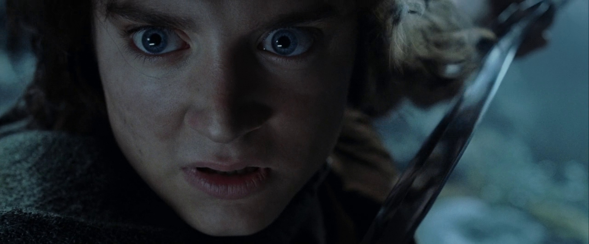Frodo Baggins, son of Drogo Baggins, was a hobbit of the Shire in the late Third Age. He is commonly considered Tolkien's most renowned character for his leading role in the Quest of the Ring, in which he bore the One Ring to Mount Doom, where it was destroyed. He was a Ring-bearer, best friend to his gardener, Samwise Gamgee, and was one of three hobbits who sailed from Middle-earth to the Uttermost West at the end of the Third Age.
Gandalf
Get a closer look 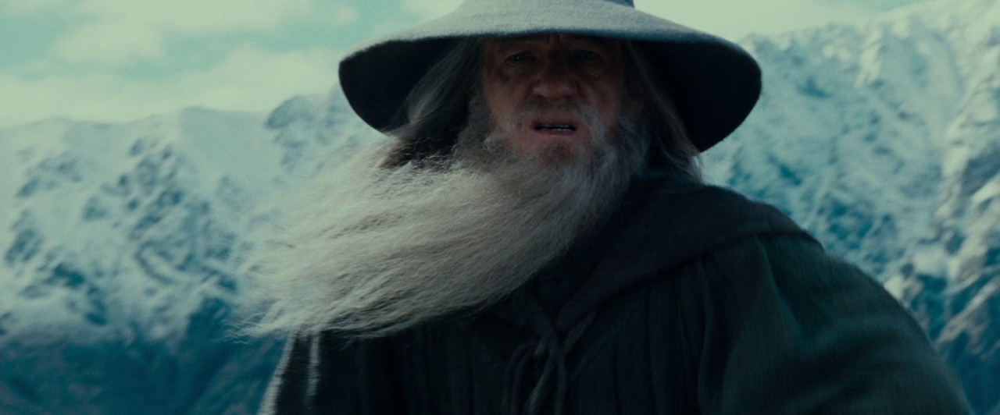Gandalf, known temporarily as the Grey and later the White, and originally named Olórin (Quenya), was an Istar (Wizard), dispatched to Middle-earth in the Third Age to combat the threat of Sauron. He joined Thorin II Oakenshield and his company to reclaim the Lonely Mountain from Smaug, helped form the Fellowship of the Ring to destroy the One Ring, and led the Free Peoples in the final campaign of the War of the Ring.
Aragorn
Get a closer look 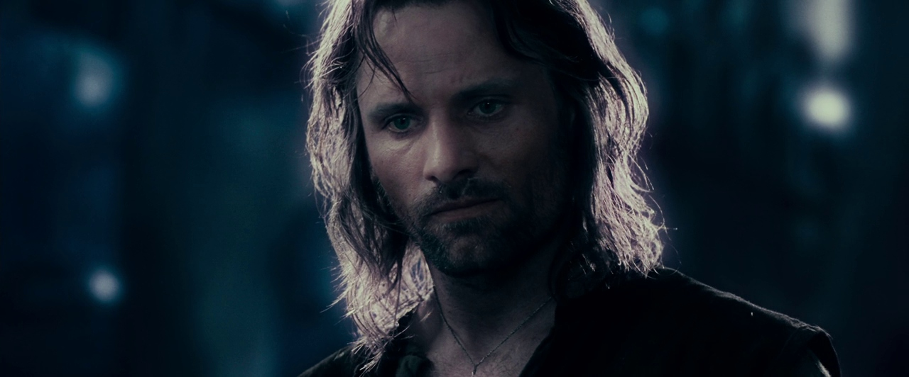Aragorn II, son of Arathorn II and Gilraen, also known as Strider and Elessar, He was a great ranger and warrior, and bore, as Isildur's heir, the shards of Narsil, reforged and renamed Andúril Flame of the West in the War of the Ring.
Sam
Get a closer look 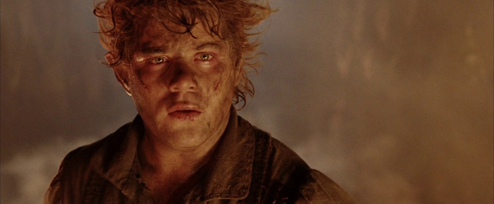Samwise Gamgee, known as Sam, was a hobbit of the Shire. He was Frodo Baggins' gardener and best friend. Sam proved himself to be Frodo's closest and most dependable companion, the most loyal of the Fellowship of the Ring, and played a critical role in protecting Frodo and destroying the One Ring.
Lady Galadriel
Get a closer look 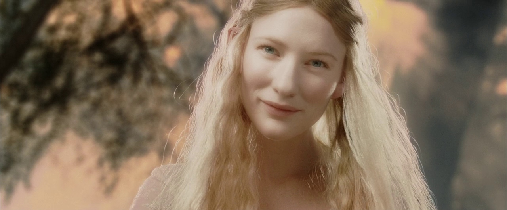Galadriel was the Lady of the woods of Lothlórien, which she ruled with Celeborn, her husband. One of the greatest Elves in Middle-earth, she surpassed nearly all others in beauty, knowledge, and power. She bore Nenya, one of the three Elven rings of power. J.R.R. Tolkien deemed her as one of the mightiest and fairest of all Elves remaining in Middle-earth in the Third Age. She was the only daughter and youngest child of Finarfin, prince of the Ñoldor, and Eärwen, whose cousin was Lúthien. Her elder brothers were Finrod Felagund, Orodreth, Angrod, and Aegnor. Galadriel was a niece of Fëanor, the most important Elf of the early First Age.
Smeagol
Get a closer look 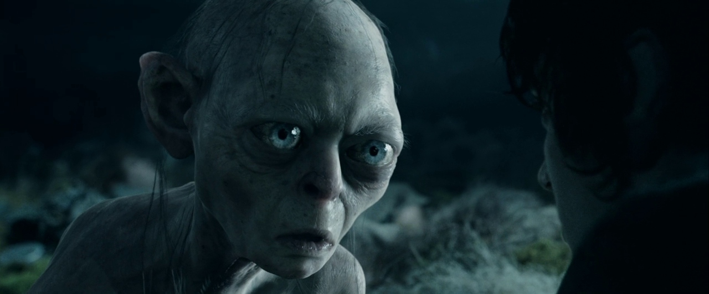By possessing the One Ring, his life extended centuries beyond his nature, and he became deformed and twisted in body and mind by the corruption of the Ring. He pursued the Ring for many years after Bilbo Baggins found it in Gollum's cave, within the Misty Mountains, and took it away. Inadvertently, Gollum would play a vital role in the ultimate Quest of the Ring. The name Gollum was derived from the sound of his gurgling, choking cough.
Merry & Pippin
Get a closer look 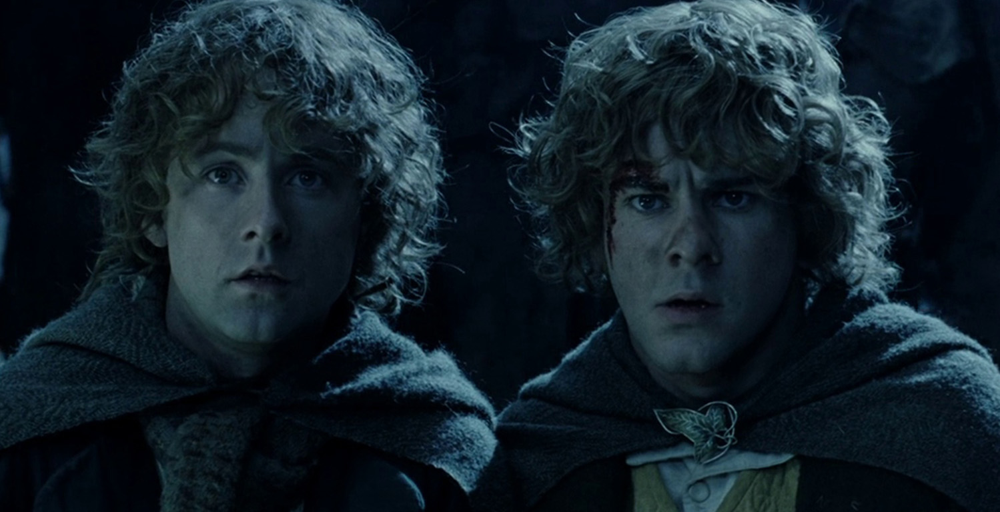Merry Brandybuck was a Hobbit of the Shire and one of Frodo Baggins cousins and closest friends. He loved boats and ponies and had a great interest in the maps of Middle-earth. He was also one of the nine companions of the Fellowship of the Ring. Peregrin Took, more commonly known as Pippin, was a hobbit of the the Shire, and one of Frodo Baggins' youngest and closest friends. He was a member of the Fellowship of the Ring and, after the War of the Ring, became thirty-second Thain of the Shire.
Eowyn
Get a closer look 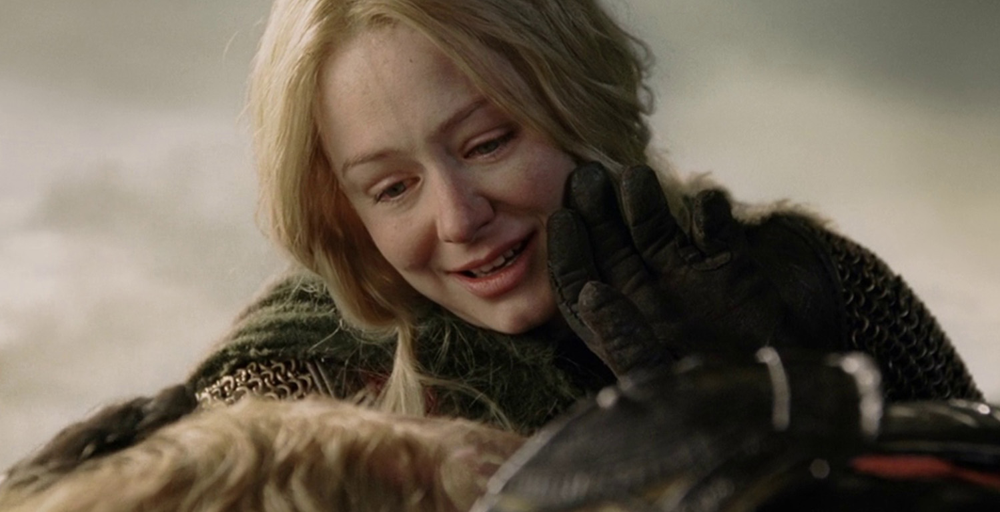Éowyn was a shieldmaiden of Rohan, daughter of Éomund and Théodwyn, younger sister of Éomer and niece of King Théoden.
Legolas
Get a closer look 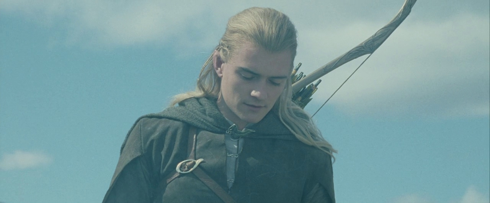Legolas was a Sindar Elf who joined the Fellowship of the Ring in the Third Age. Son of the Elvenking Thranduil of Mirkwood, Legolas was Mirkwood's prince, a messenger, and a master archer. With his keen eyesight, sensitive hearing, and excellent bowmanship, Legolas was valuable to the Fellowship in their journey across Middle-earth. He was well-known for becoming friends with the Dwarf Gimli, despite their long-held differences.
Gimli
Get a closer look
Gimli, son of Glóin, was a Dwarf of the House of Durin and a member of the Fellowship of the Ring. Unlike other Dwarves, he readily fought alongside Elves in the War of the Ring against Sauron at the end of the Third Age.
Theoden
Get a closer look 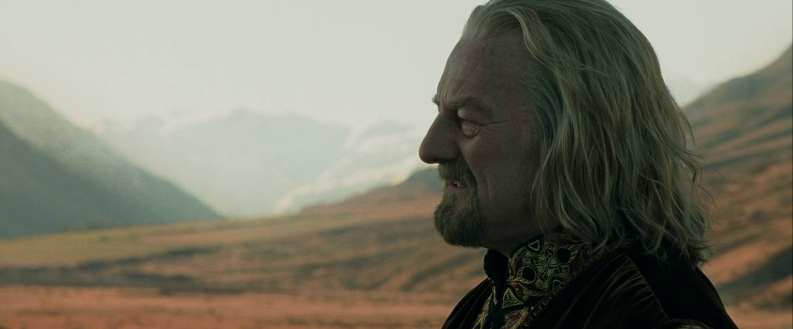Théoden, son of Thengel and Morwen Steelsheen, was the seventeenth King of Rohan, last of the Second Line of the royal House of Eorl.
Arwen
Get a closer look 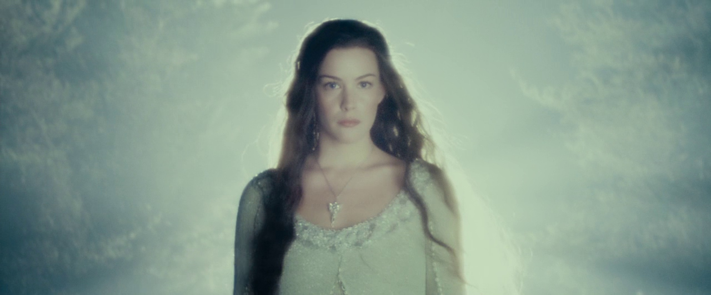Arwen was the Half-elven daughter of Elrond and Celebrían. She was often called Arwen Undómiel or Evenstar
Elrond
Get a closer look 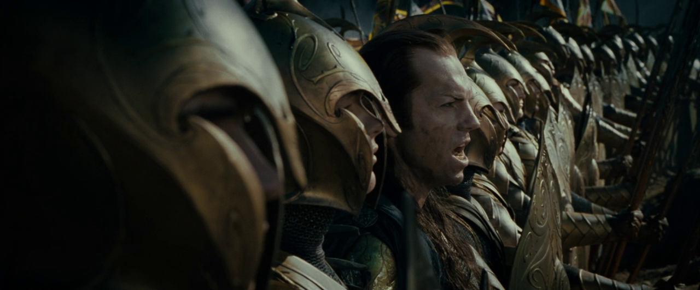Elrond Sindarin: Star-dome Half-elf, Lord of Rivendell, was a mighty Elf-ruler of old who dwelt in Middle-earth from the First Age to the beginning of the Fourth Age. He was the father of Elladan and Elrohir and Arwen Undómiel, the eventual wife of Aragorn II Elessar.
Saruman
Get a closer look 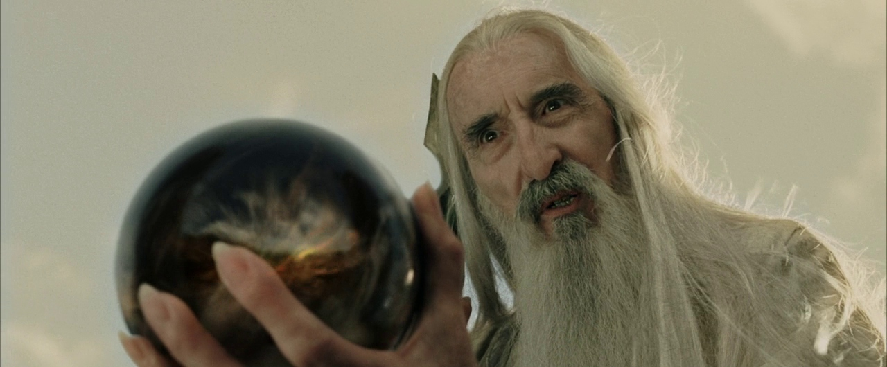Saruman, also known as Saruman the White, was first of the Istari (Wizards), the emissaries of the Valar sent to Middle-earth in the Third Age to help in countering the returned Sauron. He was originally the order's chief, and was head of the White Council that for a time opposed the Dark Lord. But, in time, Saruman was overcome by lust for power and swore fealty to Sauron, becoming his puppet. Having betrayed the Council and Free Peoples of the World, the White Wizard believed he could usurp his master's place as ruler of Middle-earth, or at least become the true power behind his throne. During the Great War of the Ring, Saruman marshalled an army at Isengard to both conquer Rohan on Sauron's behalf and try to seize the One Ring first without his knowledge.
Sauron
Get a closer look 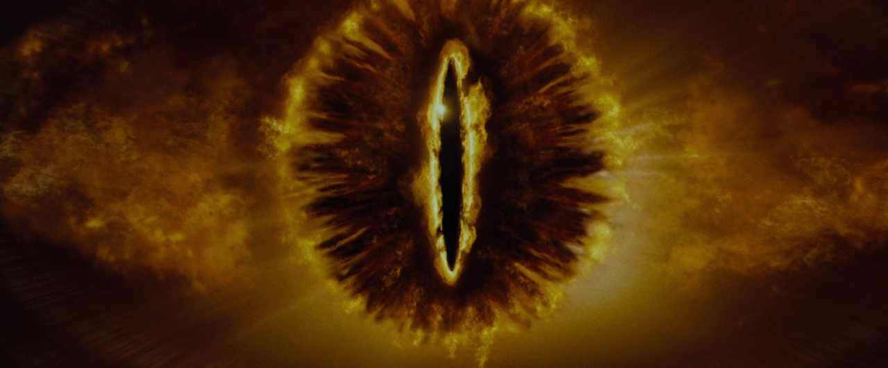Sauron Quenya, the eponymous Lord of the Rings, was the greatest subversive Maia, maker of the One Ring, renowned disciple of the Vala Aulë, and chief agent of Morgoth in the Elder Days. After Morgoth's ousting by the Valar, Sauron became the second Dark Lord and sought to conquer Middle-earth, and even Númenor, through guileful trickery, with the Rings of Power or with overwhelming legions.
Boromir
Get a closer look
Boromir was a valiant warrior of Gondor, renowned for his prowess in combat and skill on the battlefield. He was the eldest son of Denethor II, who was Steward of Gondor during the War of the Ring, and his wife Finduilas. Even the people of Rohan admired him, particularly Éomer. He was the older brother of Faramir.
Faramir
Get a closer look 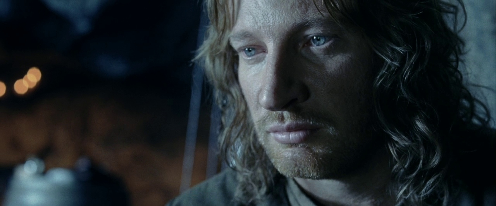Faramir was the second son of Denethor II and younger brother of Boromir. He was Captain of the Rangers of Ithilien and Captain of the White Tower.